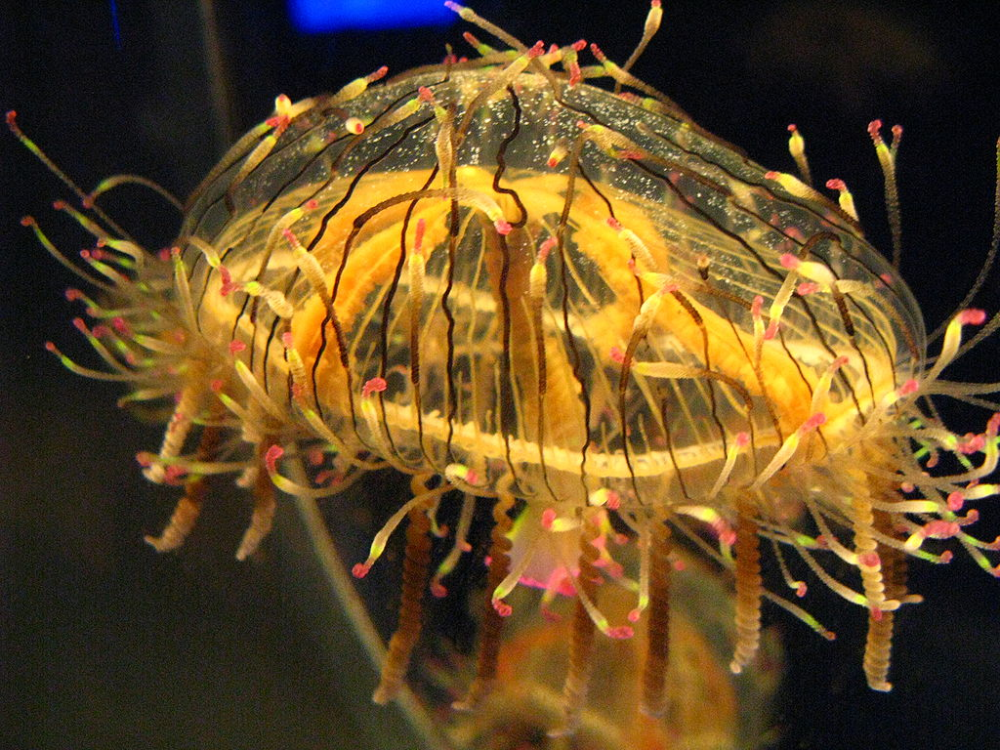
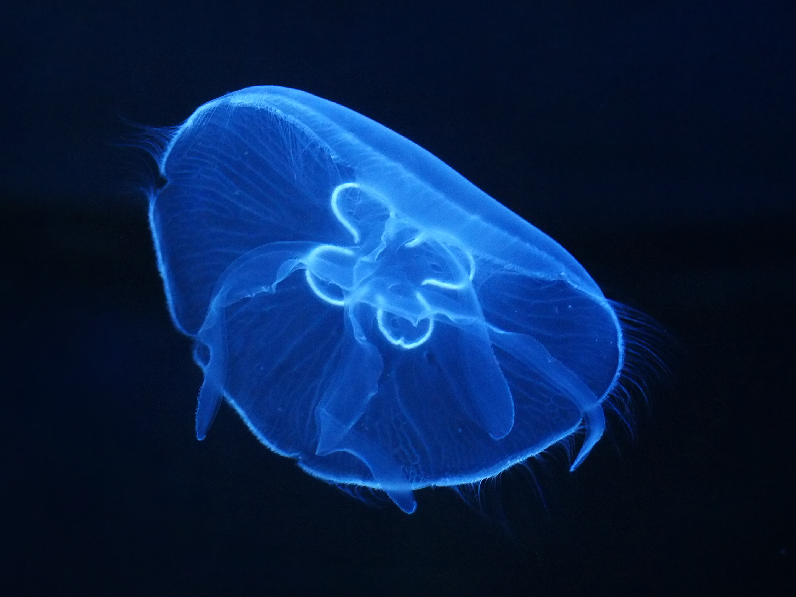

Jellyfish or jellies are softbodied, free-swimming aquatic animals with a gelatinous umbrella-shaped bell & trailing tentacles. The bell can pulsate to acquire propulsion and locomotion. The tentacles may be utilized to capture prey or defend against predators by emitting toxins in a painful sting. Jellyfish species are classified in the subphylum Medusozoa which makes up a major part of the phylum Cnidaria, although not all Medusozoa species are considered to be jellyfish.
Jellyfish are found in every ocean, from the surface to the deep sea. Scyphozoans (the "true jellyfish") are exclusively marine, and some hydrozoans with a similar appearance live in freshwater. Large, often colorful, jellyfish are common in coastal zones worldwide. Jellyfish have roamed the seas for at least 500 million years, and possibly 700 million years or more, making them the oldest multi-organ animal.
Terminology
Jellyfish & Jellies
Bloom
Medusa
Jellyfish and jellies
The popular English name jellyfish has been in use since 1796. It has traditionally also been applied to other animals sharing a superficial resemblance, for example ctenophores (members from another phylum of common, gelatinous and generally transparent or translucent, free-swimming planktonic carnivores now known as comb jellies) were included as "jellyfishes". Even some scientists include the phylum ctenophora when they are referring to jellyfish. Other scientists prefer to use the more all-encompassing term gelatinous zooplankton, when referring to these, together with other soft-bodied animals in the water column.

Jellyfish Type-1: Indias Formosal
=======
sizes="100vw" alt="Olindias Formosa (flower hat jelly)">
As jellyfish are not true fish, which are vertebrates, the word jellyfish is considered by some to be a misnomer. Public aquaria often use the terms jellies or sea jellies instead. The term "jellies" may have become more popular than "jellyfish". In scientific literature, "jelly" and "jellyfish" are often used interchangeably. Some sources may use the term "jelly" to refer to organisms in this taxon, as "jellyfish" may be considered inappropriate.
Many textbooks and sources refer to only scyphozoans as "true jellyfish".
Bloom
A group of jellyfish is sometimes called a bloom or a swarm. "Bloom" is usually used for a large group of jellyfish that gather in a small area, but may also have a time component, referring to seasonal increases, or numbers beyond what was expected. Other collective names for a group of jellyfish are "fluther" and "smack," though neither term is commonly used by scientists who study jellyfish. Jellyfish are "bloomy" by nature of their life cycles, being produced by their benthic polyps usually in the spring when sunshine and plankton increase, so they appear rather suddenly and often in large numbers, even when an ecosystem is in balance. Using "swarm" usually implies some kind of active ability to stay together, which a few species such as Aurelia, the moon jelly, demonstrate.

Jellyfish Type-2: Aurelia Aurita
Medusa jellyfish may be classified as scyphomedusae ("true" jellyfish), stauromedusae (stalked jellyfish), cubomedusae (box jellyfish), or hydromedusae, according to which clade their species belongs.
Medusa
The term medusa was coined by Linnaeus in 1752, alluding to the tentacled head of Medusa in Greek mythology. This term refers exclusively to the non-polyp life-stage which occurs in many cnidarians, which is typified by a large pulsating gelatinous bell with long trailing tentacles. All medusa-producing species belong to the sub-phylum Medusozoa.
In biology, a medusa (plural: medusae) is a form of cnidarian in which the body is shaped like an umbrella, in contrast with polyps. Medusae vary from bell-shaped to the shape of a thin disk, scarcely convex above and only slightly concave below. The upper or aboral surface is called the exumbrella and the lower surface is called the subumbrella; the mouth is located on the lower surface, which may be partially closed by a membrane extending inward from the margin (called the velum). The digestive cavity consists of the gastrovascular cavity and radiating canals which extend toward the margin; these canals may be simple or branching, and vary in number from few to many. The margin of the disk bears sensory organs and tentacles.
Jellyfish range from about one millimeter in bell height and diameter to nearly 2 m (6.6 ft) in bell height and diameter; the tentacles and mouth parts usually extend beyond this bell dimension.
The smallest jellyfish are the peculiar creeping jellyfish in the genera Staurocladia and Eleutheria, which have bell disks from 0.5 mm to a few millimeters in diameter, with short tentacles that extend out beyond this, which these jellyfish use to move across the surface of seaweed or the bottoms of rocky pools. Many of these tiny creeping jellyfish cannot be seen in the field without a hand lens or microscope; they can reproduce asexually by splitting in half (called fission). Other very small jellyfish, which have bells about one millimeter, are the hydromedusae of many species that have just been released from their parent polyps; some of these live only a few minutes before shedding their gametes in the plankton and then dying, while others will grow in the plankton for weeks or months. The hydromedusae Cladonema radiatum and Cladonema californicum are also very small, living for months, yet never growing beyond a few mm in bell height and diameter. Another small species of jellyfish is the Australian Irukandji, which is about the size of a fingernail.
The lion's mane jellyfish, Cyanea capillata, was long-cited as the largest jellyfish, and arguably the longest animal in the world, with fine, thread-like tentacles that may extend up to 36.5 metres (120 ft) long (though most are nowhere near that large). They have a moderately painful, but rarely fatal, sting.
The increasingly common giant Nomura's jellyfish, Nemopilema nomurai, found in some, but not all years in the waters of Japan, Korea and China in summer and autumn is another candidate for "largest jellyfish", in terms of diameter and weight, since the largest Nomura's jellyfish in late autumn can reach 200 centimetres (79 in) in bell (body) diameter and about 200 kilograms (440 lb) in weight, with average specimens frequently reaching 90 centimetres (35 in) in bell diameter and about 150 kilograms (330 lb) in weight. The large bell mass of the giant Nomura's jellyfish can dwarf a diver and is nearly always much greater than the up-to-100 centimetres (39 in) bell diameter Lion's Mane.
The rarely encountered deep-sea jellyfish Stygiomedusa gigantea is another candidate for "largest jellyfish", with its thick, massive bell up to 100 centimetres (39 in) wide, and four thick, "strap-like" oral arms extending up to 6 metres (20 ft) in length, very different from the typical fine, threadlike tentacles that rim the umbrella of more-typical-looking jellyfish, including the Lion's Mane.
Sizes
Types of A
Types of B
=======
Jellyfish table
approx. sizes
1A
1B
2A
2B
Diet
Medusae are carnivorous, feeding on plankton, crustaceans, fish eggs, small fish and other jellyfish, ingesting and voiding through the same hole in the middle of the bell. Jellies hunt passively using their tentacles as drift nets. Their swimming technique also helps them to capture prey; when their body expands it displaces more water which brings more potential prey within the reach of their tentacles.
Predation
Other species of jellyfish are among the most common and important jellyfish predators, some of which specialize in jellies. Sea anemones may eat jellyfish that drift into their range. Other predators include tunas, sharks, swordfish, sea turtles, penguins, and at least one species of Pacific salmon. In general however, there are few predators preying on jellyfish and they can be considered top predators in the food chain. Not only do they eat fish eggs and juvenile fish, but they also compete for food resources, leading to jellyfish having a difficult-to-reverse dominant position in the ecosystem.
Sea birds sometimes pick symbiotic crustaceans from the jellyfish bells near the sea's surface, inevitably feeding also on the jellyfish hosts of these amphipods or young crabs and shrimp.